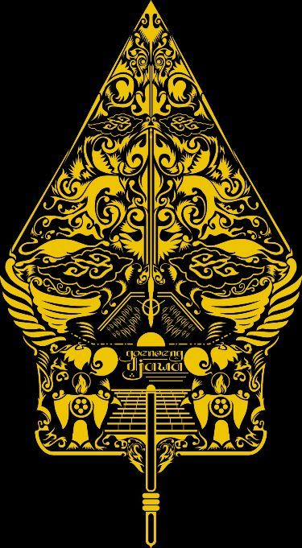
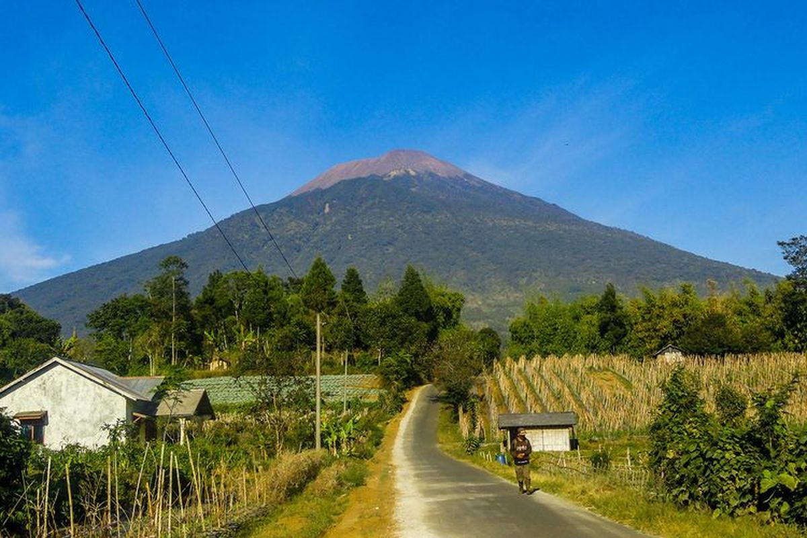

Prakata lan Sejarah Purbalingga
Kabupaten Purbalingga inggih punika salah setunggalin wilayah ing Provinsi Jawa Tengah. Dumunung ing antarane cekungan Pegunungan Serayu lan lereng Gunung Slamet ing sisih lor, Purbalingga nggadhahi kasugihan tradisi, kesenian rakyat, serta warisan sejarah budaya Jawa Banyumasan ingkang khas lan adiluhung.
Sejarah Singkat: Hari Jadi Kabupaten Purbalingga katetepaken tanggal 18 Desember 1730. Sejarah wilayah punika mboten saged dipunpisahaken saking labuh labuh Kyai Arsantaka (Kyai Jamur) lan putranipun, Kyai Yudo Nagaro (Adipati Karo) ingkang katetepaken dados Adipati Kapisan Purbalingga dening Sunan Pakubuwono II. Budaya Purbalingga ngrembaka saking sintesis ajaran lokal, nilai keagamaan, lan karakter msyarakat Banyumasan ingkang blaka suta (cablaka).
Peta Wilayah Kebudayaan
Peta administratif lan persebaran wewengkon kebudayaan Kabupaten Purbalingga:

Daftar 18 Kecamatan
Pilih nama kecamatan ing andhap punika kangge maos sejarah lan deskripsi kebudayaannipun:
Galeri Pameran Museum Kebudayaan
Sawang suasana pameran arsip, artefak kuno, lan potret warisan budaya Purbalingga ing njero ruangan museum:


Pusat Referensi & Literatur
Cari bahan bacaan, jurnal sejarah, atau referensi ensiklopedia mengenai kebudayaan dan tokoh Purbalingga: